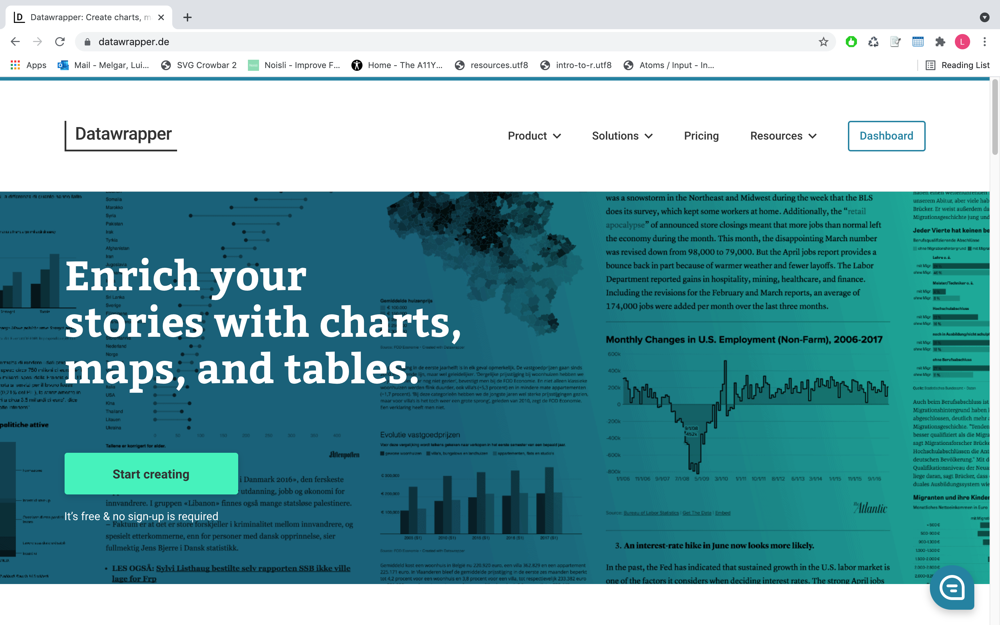
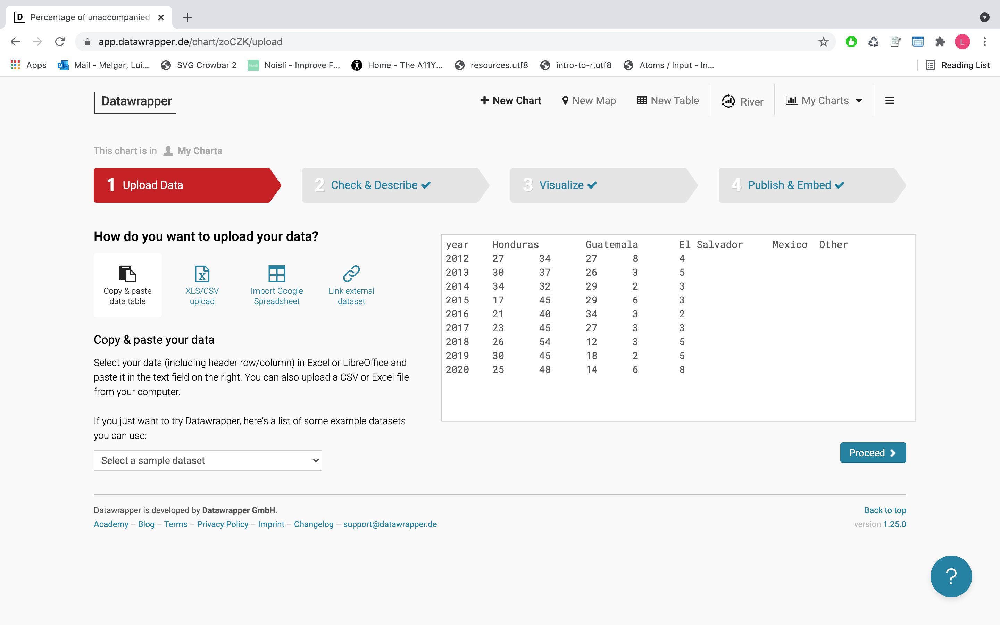
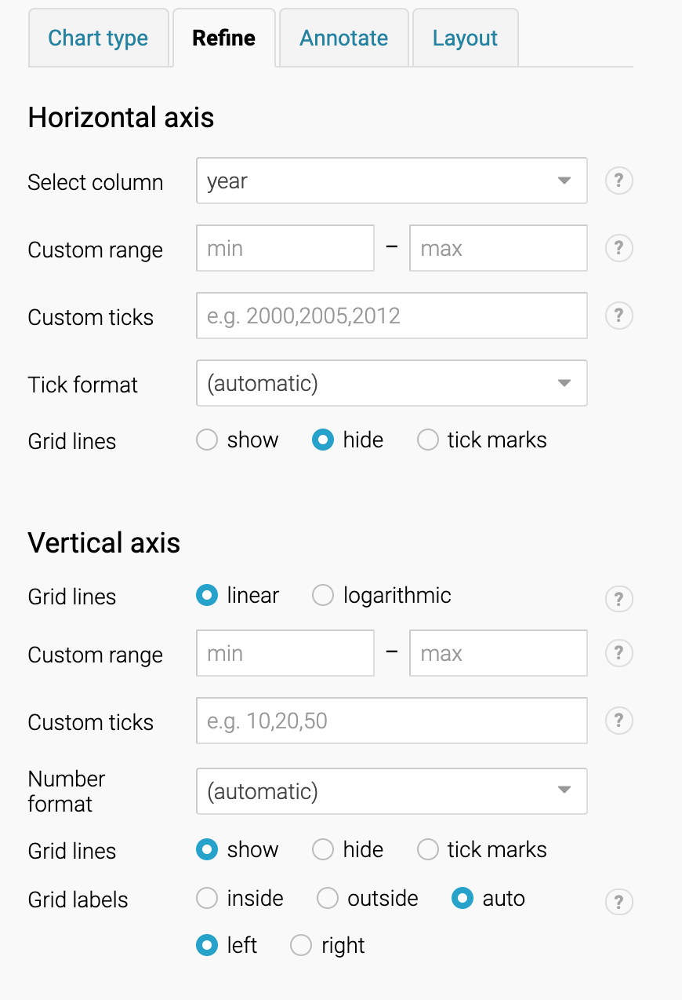
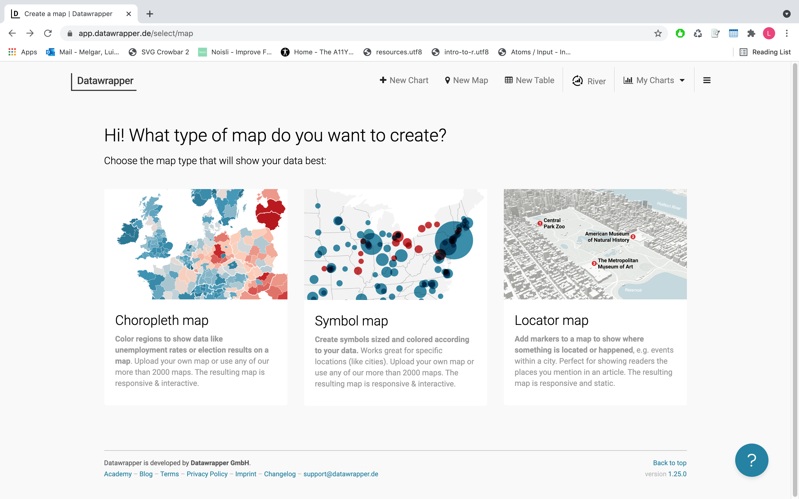
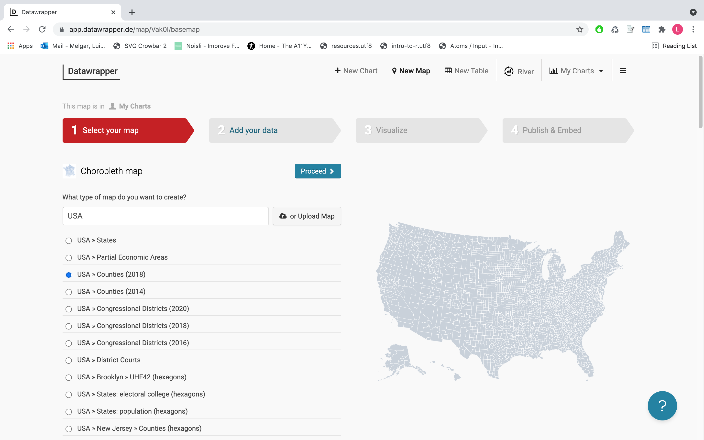
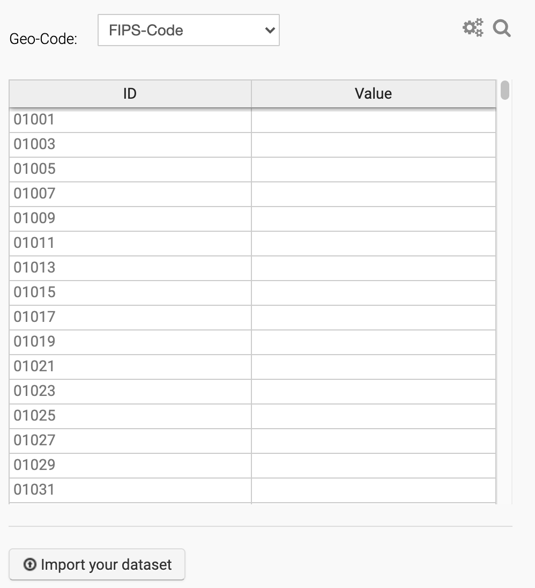

Charting with Datawrapper
Some thoughts on dataviz
1. Garbage in, garbage out. A nice looking graphic won't save a set of lousy data.
2. Keep it consistent. Things that are the same should look the same.
3. Everybody loves maps, but not every dataset involving states or counties –or other geographic data– needs to be a map.
-When maps shouldn't be maps, by Matthew Ericson
4. Colors are great, but too many colors can be overwhelming and can make your graphic hard to read. Keep your palettes simple. Use color to stress what it's important.
-More on colors, from Datawrapper's blog
-More on colors, by Claus Wilke
-Good colection of gradients, from Carto
-Tools to test if your data visualization is colorblind friendly Color Oracle and Sim Daltonims [only for Mac]
-Tool to find good combinations of colors, Adobe
5. Sketch by hand before using any software. Think about what data you have in your dataset (time, geography, multiple variables...).
6. You don't need to put everything in one graphic. Sometimes, the best solution to explain something is to use more than one graphic.
7. Learn how to use graphics. Don't choose graphics because of their aesthetics. First, think about what you want your audience to learn from that graphic and what chart fits better with your data.
References, inspiration, things
Where to find Datawrapper
Datawrapper is a free [they offer paid plans, also] tool that allows you to create responsive graphics that can be embedded. You can find Datawrapper's website here.
If you don't have one, you'll need to create an account. It's pretty simple, you can even do it using your Google account.
Go to how to do a mapLine charts: Always useful, always elegant
This is how a line chart looks like in Datawrapper. 👇
1. Copy the data from this Google spreadsheet. You can use the link to the spreadsheet, too.
2. Go to Datawrapper, click on Dashboard.
3. Click on + New Chart.
4. Add the data that you want to use in the graphic.
You have four options to upload the data.
5. Once that you have uploaded the data, click on the 'Proceed' button. You will see how your data looks like and what type of data is stored in each column –number, date, text...–
[You can skip this part, if you want] You can select each column by clicking on its header. It allows you to change the type of data, see the distribution in the data, run calculations...
After you click, proceed, by default you'll see a line chart.
But you can change that in the menu on the left side of the screen. In this case, we're using a line chart.
Let's give some style to this graphic. Click on the next tab in the menu 'Refine.'
6. Modify the aesthetics of your graphic. You can change the colors, the axes, the position of the labels...
I'm changing:
-The ticks in the x axis
-The ticks in the y axis
In this case, I want them to highlight El Salvador and Guatemala. I going to pick two colors for those two countries. For the others I will use the same gray.

You can also change the width, or dashes, add symbols

7. Once that you're happy with the outcome, click on 'Proceed' so you can add the finishing touches to the graphic. In the 'Annotate' tab you can include a title, a subtitle, source, a link to where the data comes from...

But in this case, because it's a line chart, you can also annotate the chart.
Done with the annotation? Click 'Proceed.' It will take you to the 'Layout' tab. Decide if you want the data to be downloadable. Click on 'Proceed.'
7. Now let's publish the graphic. Click on 'Publish chart'.

Once that the graphic is published, you can use the embed code and add it to your website. If you want to share the result, you can also copy the URL – it usually looks nicer in the 'Normal size.'

Maps: We all love maps
This is how a choropleth map looks like. 👇
1. Download the data from here. [IMPORTANT: Don' try to open it with Excel or Numbers]
2. Go to Datawrapper and click on 'New map,' in the menu in the top. Then select the 'Choropleth map' option.
3. In the search area, type 'USA' and selec USA counties (2018).
By default, Datawrapper offers maps at the Census tract level. What if you want to create a map of a metro area –Miami-Ft. Lauderdale-Palm Beach, for example–, or by zip code, you could upload your own map base. In some cases local governments made those maps public.
The county level map should look like this.

If it does, you can import the data. For that, you could copy and paste it in the box, or you could click on the button that says 'Import your dataset.' Let's go with this second option.
This process should be pretty straight forward, you just need to follow the instructions on the pop-up menu.
4. The next step allows you to copy and paste the data or upload a file. My recommendation in this case – upload a file. [TECHNICAL EXPLANATION: To create a county level map, Datawrapper relies on a code known as FIP, a five number code that identify each county. In some states, like Alabama, FIPS codes starts with 0 –Autauga County, Alab., FIP is 01001-. Excel and Google spreadsheet read those codes as numbers, and numbers don't start with zero. If you want to know how deal with that when working with Excel or Google spreadsheet, ping me.]

5. Select the column with the FIPS. In this dataset is the third one.

6. Now select the column that including the values that you want to visualize. This dataset contains data on wokers over 16 that commute to their work walking or using public transportation. It includes the total number for each category, but also the percentage.
The last column is share of workers that walk to their works. I'm using that one.

Your data should look something like this.

It it does, click on 'Proceed.'
The next interface is very similar to the one that we saw while we were creating the line chart. The first thing that you'll see is the 'Refine' tab. It allows you to modify the aesthetics of the graphic. I want my map to look like this.
7. In the 'Select palette' section, you can select the range of colors you want to use to visualize the data. It offers palettes for continous scales –go in order, positive or negative– or diverging scales –for example, it goes from 0 to negative and from 0 to positive values–. If you want, you can create your own palette.

8. You'll also need to select how you want the data to be distributed. You can do that by clicking on 'Stops'. In this case I'm using quintiles, that will equally distribute all the values in five categories.
You could also change the column that you want to visualize, if you want to.
9. Now let's create a tooltip, so when someone mouse over a county can read the name of the county and the value we're visualizing. Click on 'Customize tooltips.'
A new window will pop up. You have some blank areas and some blue blocks with the name of the variables inside of it. If you click on the blue blocks, it will add that variable to the tooltip. But you can also include some text. And if you know some html, you can bold text, include breaks...

10. Quite probably now the key - that help to understand what the colors represent - quite probably looks weird, like every color seem to have the same shade. If that's the case, let's fix it.
Unselect 'Automatically generate legend.' You'll see a new menu like this.

In each of the blank field under the 'Caption' title, you can add the value that will act as a breaking point in the scale.
If you want to add more values, just click on 'Add legend row.' If you want to delete a row, click on the 'X' in the right side of each row.
9. Click on 'Proceed.' The next tab is 'Annotate.' As we did with the barchart, we're giving the map a title, a byline and a description.

Done with the annotation? Click 'Proceed.' It will take you to the 'Design' tab. Let's skip this one, click 'Proceed again'.
10. Let's publish the map. Click on 'Publish chart'.
Once that the map is published, you can use the embed code and add it to your website. If you want to share the result, you can also copy the URL – it usually looks nicer in the 'Normal size.'